Este programa permite acceder a la versión trial del programa durante 2 meses gratis.
Vamos a ver como funciona:
Este programa permite acceder a la versión trial del programa durante 2 meses gratis.
Vamos a ver como funciona:
Cuándo se accede al programa lo primero que aparece es un dashboard en el que se pueden ver:
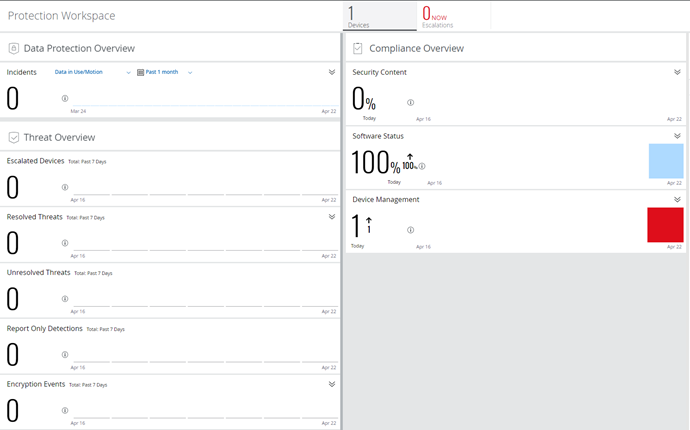
Para añadir aplicaciones al agente se puede usar el Mvsion Marketplace. Dichas aplicaciones están disponibles en el entorno en unos pocos minutos.
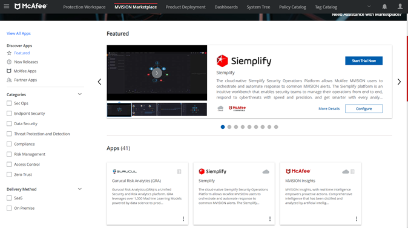
Si se quiere configurar el despliegue de productos hay que ir al apartado “Product Deployment”. En dicho apartado se puede configurar el grupo sobre el que se crea dicha configuración, la plataforma, que se quiere instalar de cada programa y si se quiere actualizar automáticamente
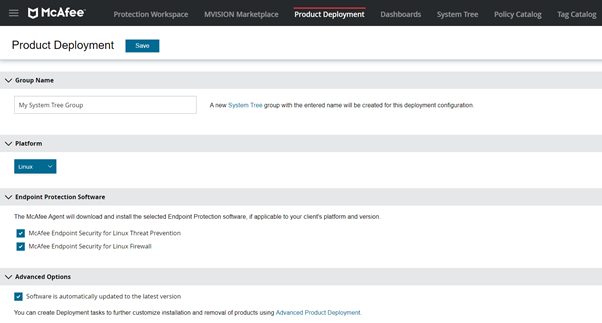
Si se quieren ver las estadísticas a través de gráficos de barras, sectores… Se pueden ver en el apartado “Dashboards”. Solamente se tiene que seleccionar el dashboard que se quiere mostrar.
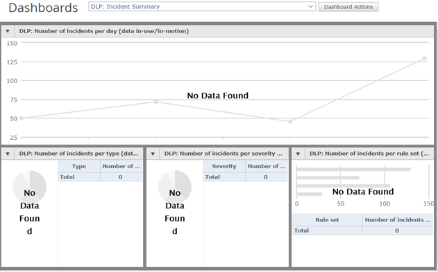
Si se desea añadir un nuevo equipo o grupo se puede hacer desde la opción “System tree”. Para crear un equipo hay que ir al apartado “New Systems” y para crear un nuevo subgrupo hay que ir al apartado “New subgroups”.
Creación de un usuario:
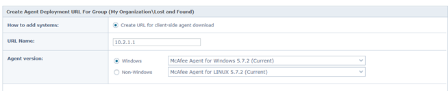
Una vez creado el usuario, aparecerá una dirección URL la cual descargará el agente McAfee Agent.
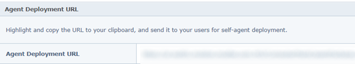
Una vez ya instalado el programa en el equipo, dicho equipo aparecerá en el árbol del sistema.
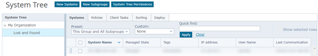
Si se hace click sobre un sistema, se puede ver con detalle la información del sistema, su dirección IP, nombre de dominio, políticas aplicadas, productos instalados, malware detectado de dicho equipo...
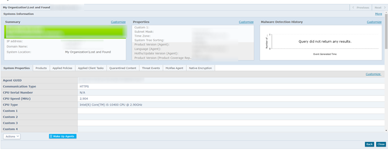
Creación del subgrupo:
Para crear un subgrupo lo único que hay que hacer es hacer click sobre “New Subgroups” en el apartado de “System Tree”. Después lo único que necesitamos es asignarle un nombre al grupo.
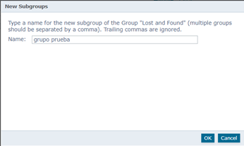
También se dispone de un catálogo de políticas. Dicho catálogo de políticas tiene varias políticas predefinidas, aunque también se pueden crear políticas nuevas a través del botón “New Policy”.
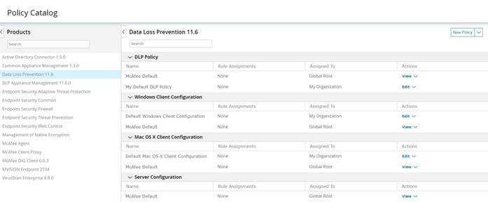
Aparte de crear nuevas políticas también se pueden editar las políticas que ya trae por defecto el agente. Para ello hay que pulsar sobre “Edit” y cambiar los valores que se quieran.
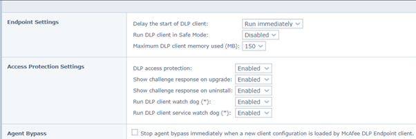
DAT
Los archivos DAT contienen firmas y otra información que los productos antivirus de McAfee utilizan para proteger el equipo contra amenazas.
Puedes solicitar una demo de 2 meses desde el siguiente enlace:
Obra publicada con Licencia Creative Commons Reconocimiento Compartir igual 4.0